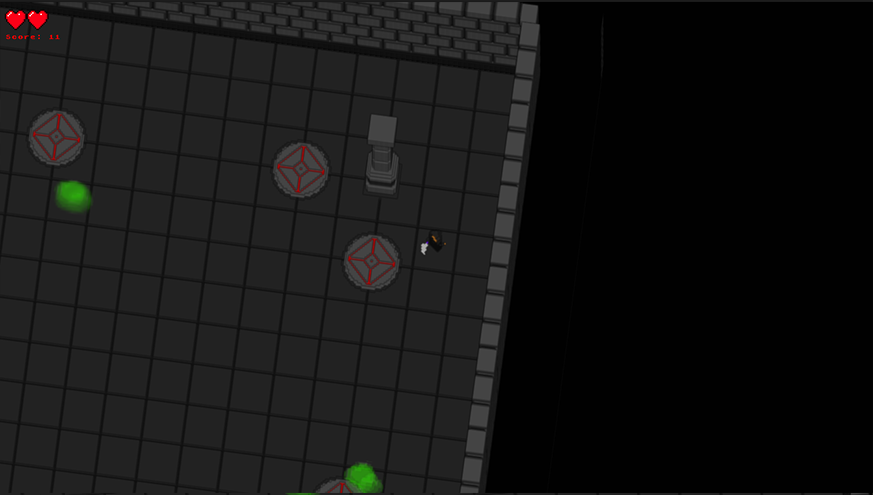
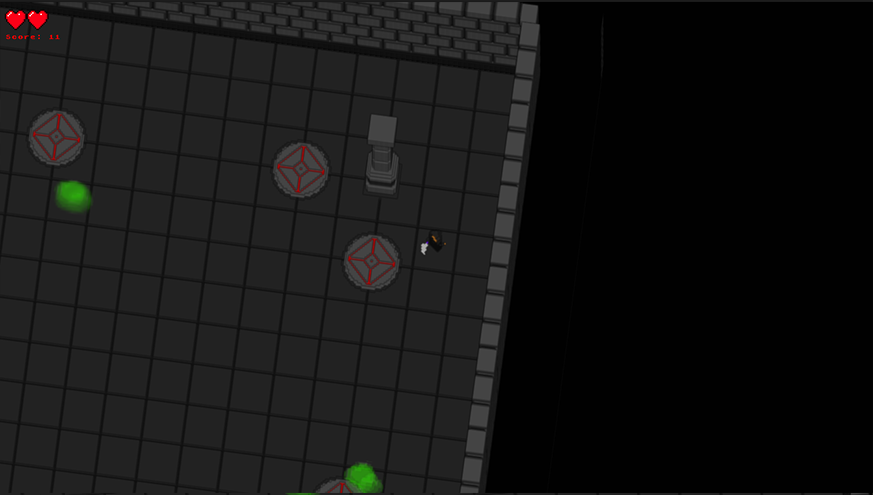

Summary
This project is a simple wave-based dungeon game, the game has a 3D effect, but is rendered in a 2D framework called S2D (University's in-house framework). It was made for the my Fundamentals of Game and Graphical Systems Development module (Year 1, Semester 1), for the assignment we were tasked with creating a 2D game using the framework provided.
The 3D effect is achieved by layering multiple sprites per model, each sprite is a horizontal slice of the model, which is then positioned and rotated correctly to appear 3D.
The gameplay is an infinite wave-base game, where slimes spawn randomly, the objective is to survive as long as possible and reach the highest score, which is then uploaded to an online leaderboard to compare with others.
Features
- 3D Effect in 2D Framework
- Character Controller
- Animations
- Online Leaderboard (hosted using Dreamlo)
- Enemy AI
What I learned
Developing this game taught me about using unfamiliar frameworks (SDL, libcurl), 2D mathematics and other mechanics such as collision detection and game states. I also gained experience using C++ through this project, and learned to keep code clean.